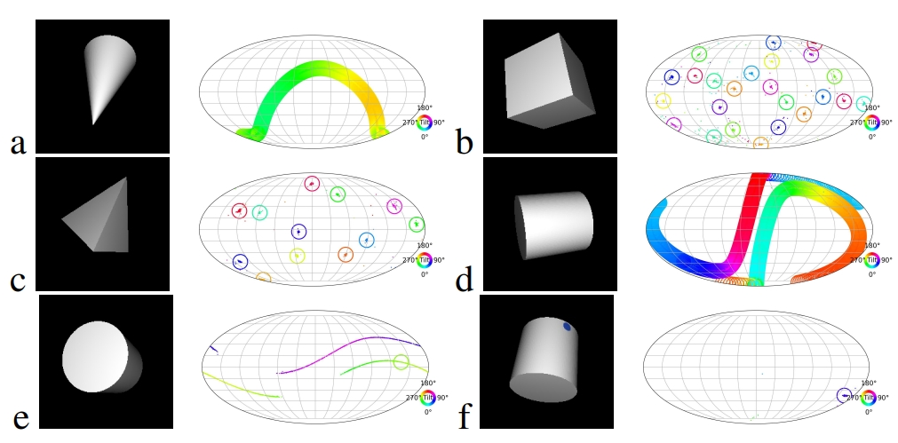

|
Haoran Liu I'm currently an undergraduate student in School of Electronics Engineering and Computer Science (EECS) at Peking University (PKU). I am honored to be advised by Professor He Wang. My current research interests include probabilistic modeling, large language models, and robotics. Outside of my academic pursuits, I have a keen interest in history, particularly in the era of modernization. |
{kind=link}
|

|
Delving into Discrete Normalizing Flows on SO(3) Manifold for Probabilistic
Rotation Modeling
Yulin Liu*, Haoran Liu*, Yingda Yin*, Yang Wang, Baoquan Chen†, He Wang† CVPR, 2023 project page / code / arXiv Mobius flow is a discrete normalizing flow that can be used to model complex distributions over the SO(3) manifold. |

|
UniDexGrasp: Universal Robotic Dexterous Grasping via Learning Diverse
Proposal Generation and Goal-Conditioned Policy
Yinzhen Xu*, Weikang Wan*, Jialiang Zhang*, Haoran Liu*, Zikang Shan, Hao Shen, Ruicheng Wang, Haoran Geng, Yijia Weng, Jiayi Chen, Tengyu Liu, Li Yi, He Wang† CVPR, 2023 project page / code / arXiv UniDexGrasp is a two stage pipeline for dexterous grasping, where the first part generates a goal pose with probabilistic models and the second part grasp the object with reinforcement learning. |
|
This website's template comes from Jon Barron's source code. |